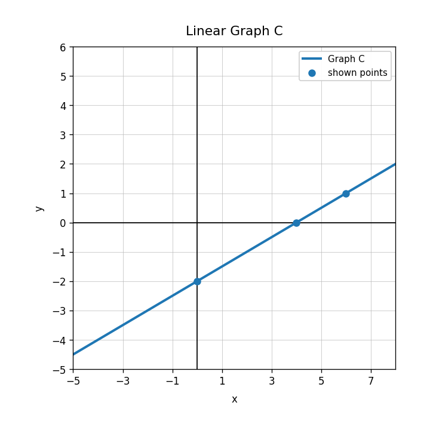
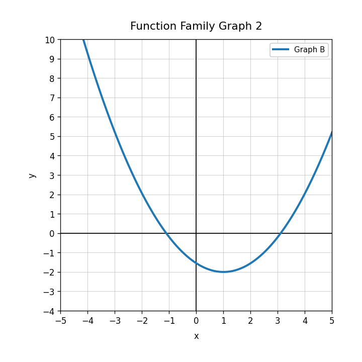
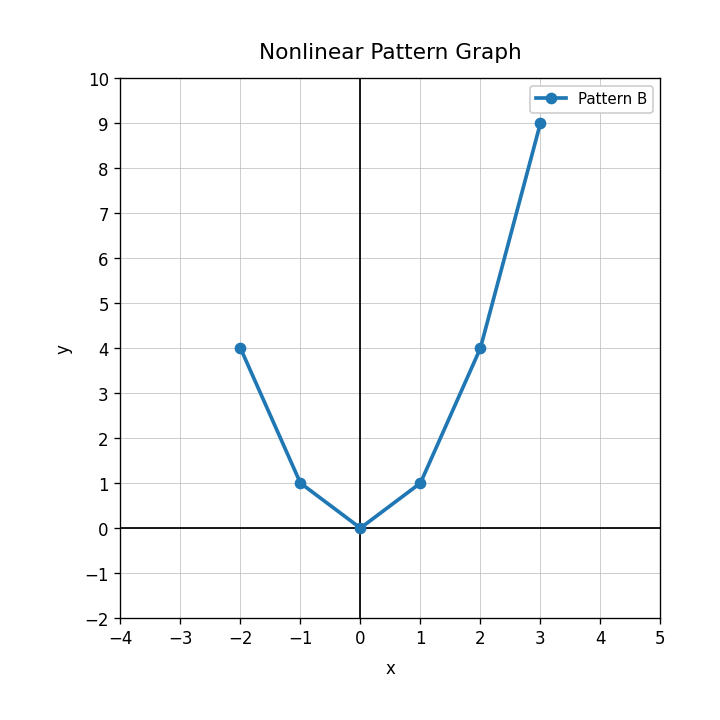
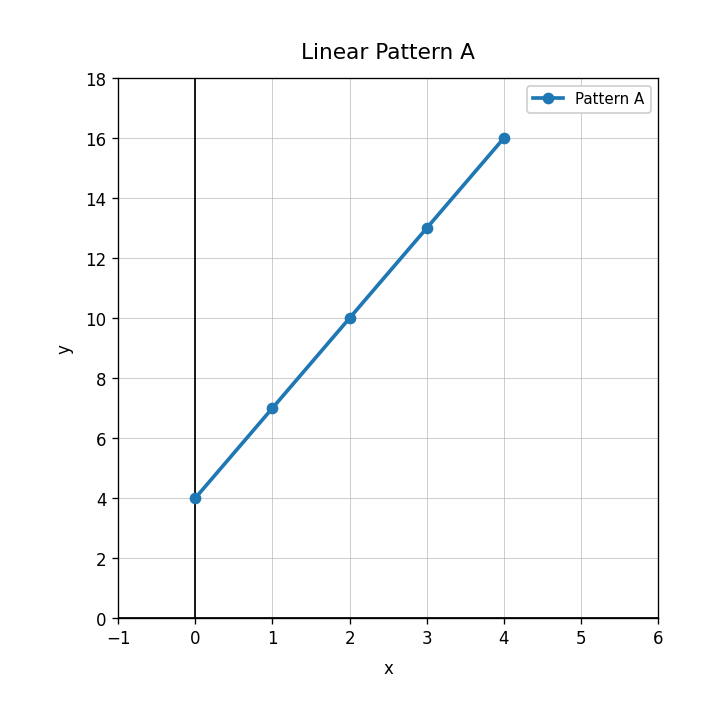
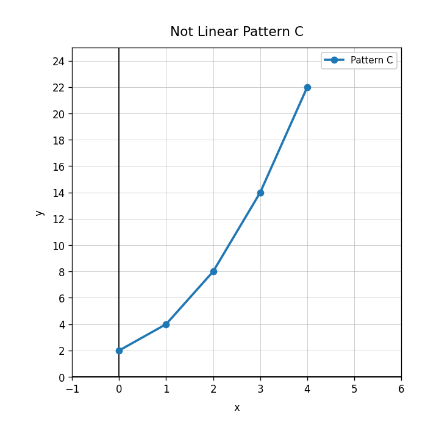

Practice Set 2.3.3
Practice Set 3 — Full Rigor Spiral
- Current focus: Unit 2.3 — Writing Linear Equations
- Main spiral: Unit 1.3 — Function Families
- Earlier readiness spiral: Unit 0B.3 — Linear Patterns and Rate of Change
- Current section: 4 questions — DoK 1, DoK 2, DoK 3, DoK 4
- Main spiral: 8 questions — 4 DoK 1, 2 DoK 2, 1 DoK 3, 1 DoK 4
- Earlier readiness spiral: 4 questions — DoK 1, DoK 2, DoK 3, DoK 4
In the equation $y=\frac{3}{2}x-4$, identify $m$ and $b$.
Use Graph C. Write an equation and explain how the graph shows the slope.

A student writes $C=5m+3$ for a taxi that charges $5 to start and $3 per mile. Explain the error and write the correct model.
Create a context, table, graph description, and equation for a line with slope $-2$ and $y$-intercept $12$.
Classify $y=2^x$ by function family.
Identify the family shown in the graph.

What shape should you expect from a linear function graph?
Classify $y=|x-3|$ by function family.
Use Pattern B. Does the pattern appear linear or nonlinear? Explain using the graph shape.

Match each family to a feature: linear, quadratic, absolute value, exponential.
A student says every increasing graph is linear. Critique the statement with an example or explanation.
Create a table that is linear and a table that is nonlinear. Explain how the differences show the family type.
Use Pattern A. State the constant change.

Use the graph. Which pattern changes faster? Explain using rate of change.

Use Pattern C. Explain why this pattern is not linear.

Create a tile pattern that starts with 6 tiles and grows by 4 tiles each figure. Make a table for Figures 0 through 4 and explain why it is linear.